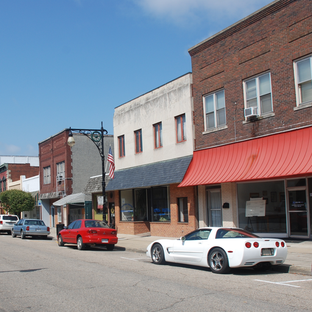
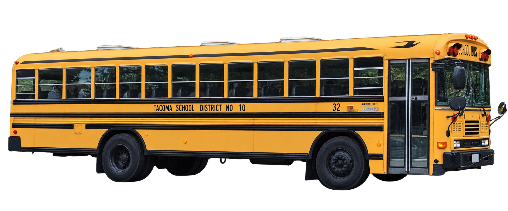
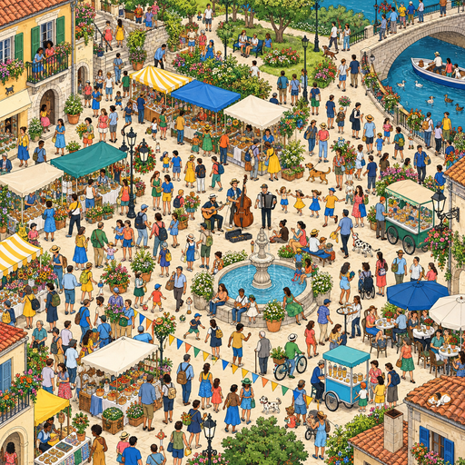

COMPARE THE DELIVERABLES
One search.
Two learned oracles.
Hide a bus in a street photo, or a fictional explorer in a crowd. Both experiments score image regions with a trained quantum circuit, then show how Grover redistributes their probabilities.




02 / SEARCH ATLASFind the explorer.
A visual scavenger hunt makes small fragments and ambiguous cues matter. Move the original figure into a busy crowd, switch grid size, and inspect a measured region.
Try the crowd finder ↗Original AI-generated crowd and character artwork. This is a fictional visual target, with no demonstrated real-person recognition.
WHICH STORY WORKS BEST?
The hook differs.
The scientific question stays.
The bus CAPTCHA offers the most immediate “can it solve this?” hook and real-photo input. Its unfamiliar-street preset also reveals why a confident quantum search can choose the wrong region.
The crowd finder offers a calmer visual-search story, with a distinctive target card and many small distractors. It explores person-shaped pattern search within its original illustrated scene.
These are presentation assessments. Patch accuracies below use different datasets and cannot decide which website is better. Try both, then compare the oracle's false positives, missed targets, and exact target probability.
Shared circuit. Different evidence.
| Question | Bus photo composites | Original crowd composites |
|---|
| Classifier | 4 qubits · 4 layers · 40 fitted slots | 4 qubits · 4 layers · 40 fitted slots |
|---|
| Prediction influence | 36 slots; 4 final RZ phases inactive | 36 slots; 4 final RZ phases inactive |
|---|
| Input features | Eight yellow-color and shape features | Eight band, color, and shape features |
|---|
| Frozen QNN patch accuracy | 98.45% · 2,000 patches | 99.00% · 600 patches |
|---|
| Matched logistic accuracy | 99.25% · same bus patches | 99.67% · same crowd patches |
|---|
| Photograph / art identity scope | One training bus cutout and street; separate independent-photo failures documented | One original explorer and crowd; new placements of those assets |
|---|
| Oracle construction | 16 or 64 classical region predictions | 16 or 64 classical region predictions |
|---|
| Independent target check | Inserted foreground alpha >32, checked after measurement | Inserted foreground alpha >32, checked after measurement |
|---|
The matched logistic models score higher on both of these patch tests. No QNN classification advantage or end-to-end quantum runtime speedup is established. Image loading, features, circuit simulation, and oracle construction still cost work.
ASK ABOUT COMPLETE SCENESGood patch scores can hide a bad oracle.
Unfamiliar street diagnostic
The frozen photo QNN produces zero clean-hit scenes in 384 placements on each grid in the independently photographed Emeryville street. A clean hit needs at least one target mark and no false marks. Many target hits still occur, but background errors contaminate every scene.
Photo diagnostic ↓Dense crowd placement audit
The frozen crowd QNN produces 356/384 clean hits on 4 × 4 and 345/384 on 8 × 8 in the nominal boundary/placement mixture of predefined probes. The 8 × 8 set includes 369 unique geometry configurations among 384 probes. A separate scale/brightness suite falls to 132/384 clean hits on 8 × 8. The matched logistic model is stronger on this audit too.
Crowd scene summary ↓These are separate labelled Pillow protocols, with alpha >32 evaluation. They use different scene families and are not a single ranked benchmark. The websites expose actual browser results separately, including reproducible crowd misses.
THE CONTRIBUTIONInspect the oracle.
Then trust the probability.
Grover amplifies whichever regions the model accepts. Both sites expose that boundary: a correct predicate helps, a false positive can be amplified, and an empty oracle abstains. The separate “Confident search. Wrong answer?” lesson lets you construct these cases exactly.
Browser classifiers and search registers are separate classical simulations. The reproducible coherent-circuit studies are additional research prototypes, not the image demos' inference path.